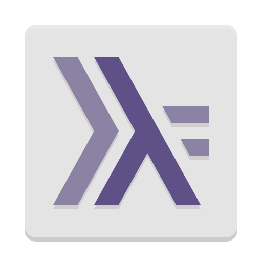

Hi! My name is Teamclouday!
Currently, I'm a student of
Syracuse University.
I'm in Computer Science major.
I like coding very much!!
About Me
Hi! My name is Teamclouday!
Currently, I'm a student of
Syracuse University.
I'm in Computer Science major.
I like coding very much!!
My Coding Experience
 |
C# is the first language I've learned. I learned it by myself, with help of information online and a book: "Beginning C# 6 Programming with Visual Studio 2015". Though some people think it is not a good choice for the first language to learn. The truth is I benefit a lot from the code. For me, it is a language of functions and objects. For most aspects, it cares the user more than itself. Also, I watched a lot of tutorials on Youtube. Besides the basic console applications. I learnt wpf, winform and websites. They are all very interesting. By the way... All these are done with Visual Studio. Thus, I love it very much!! |
|  |
Haskell is basically the first language I've learnt officially.(i.e.In college) I like this language very much, since it is functional and very capable of handling data. Also, it has a lot of built-in functions, which makes coding easier. However, it is mostly compiled in a unix-based system, which is very inconvenient for me(a Windows user) to play with. On one hand, it is powerful when dealing with massive data. On the other hand, it lacks the friendlyness when interacting with human users. Currently, I'm still studying it as a course of my major. I do hope I could get command of most of it, before this course ends. |
 |
I learnt this language from SoloLearn. Thanks to its rich tutorial and friendly community, I've lit my passion for this language. For me, it is the door to creating a real website(Not using somthing like wix...). Right now, I'm not that experienced with its coding, which is why I start to write this Personal Profile website. During the course of learning, I also encountered CSS and Javascript. They're all very helpful in building wesites. Based on my experience with C#, I'm able to get familiar with them within a short time. |
 |
For me, this is a very powerful language, which I also learnt from SoloLearn. However, I surprisingly haven't play with it very often!! Unlike C#, this language can code applications for literally all platforms. I hope one day, I can write an app for my phone with it. There's several years before my graduation. I believe there'll be time. |
 |
I personally like this language very much. It is as powerful as Haskell when handling data, and as friendly as most user-faced languages. Moreover, I could write code on my phone with apps like Pydroid3. Besides this, it is very easy to read and write, since its principle is the easier the better. Like Haskell, it also has some built-in functions that makes coding easier, as well as a lot of external libraries. Python is also well-known for its use in AI. Therefore, I will try to learn more about it! |
--Website Built By Teamclouday--